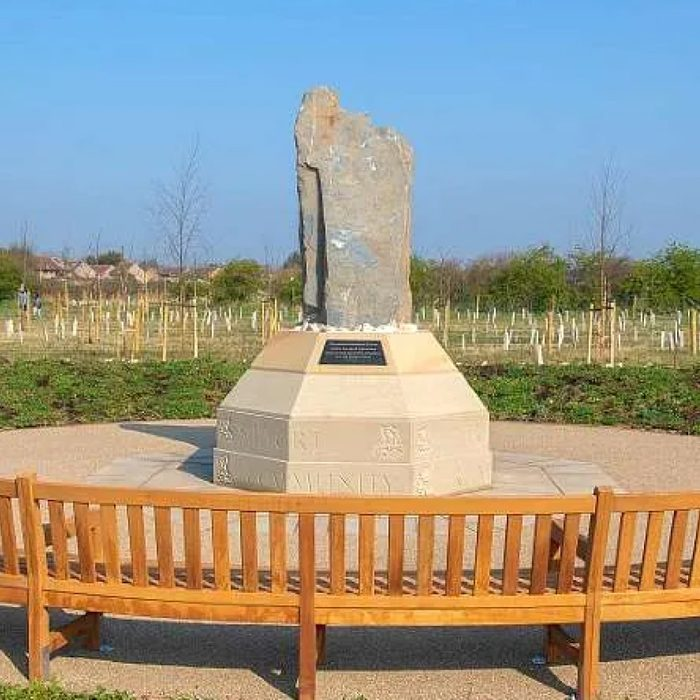
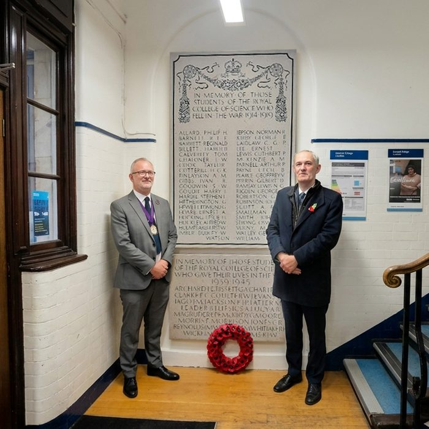
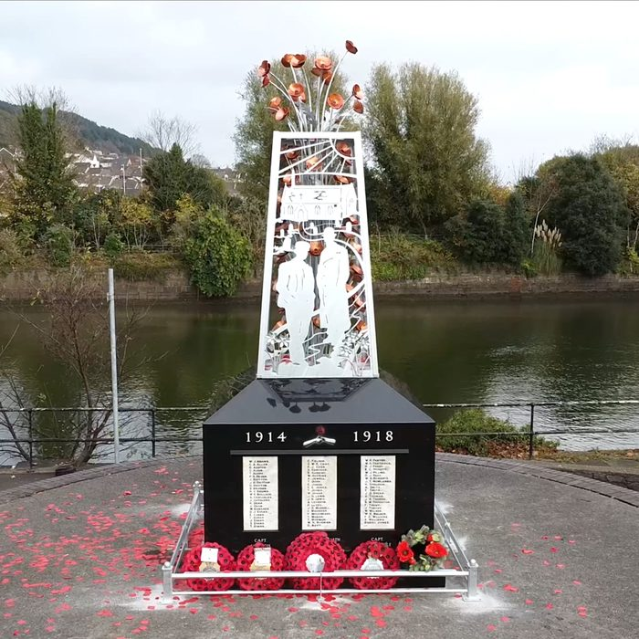
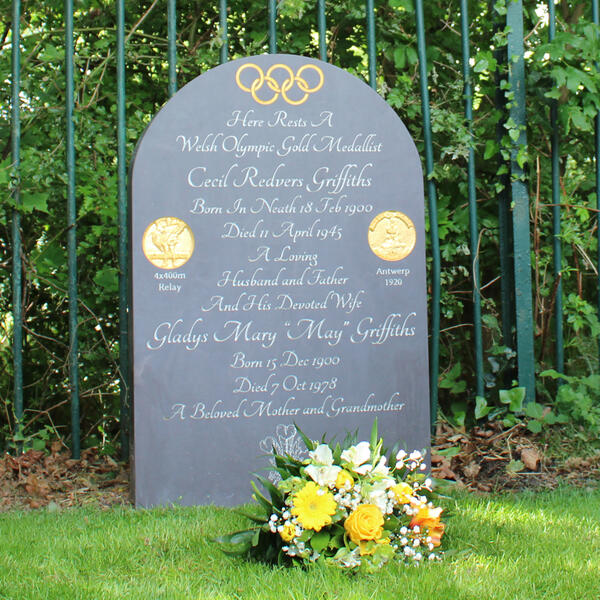
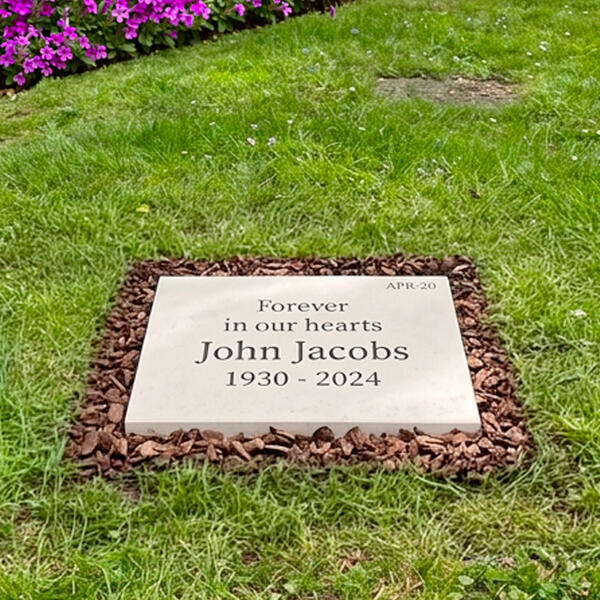
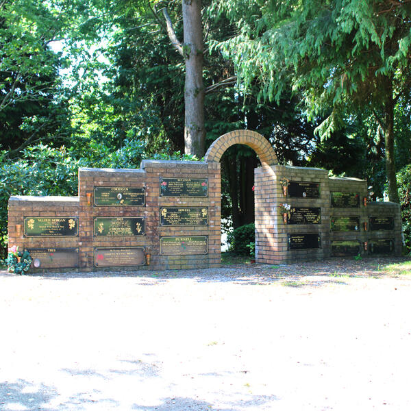
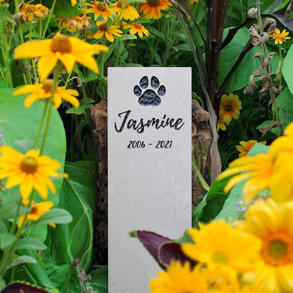
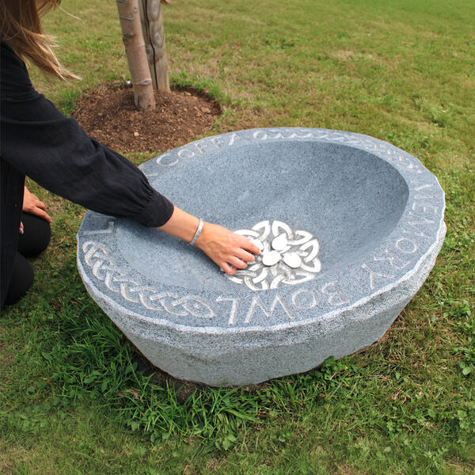
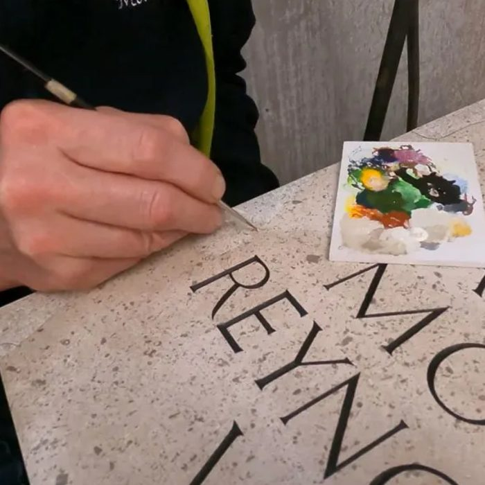

We work with funeral directors, natural burial grounds, crematoria and private clients to create headstones, memorial markers and commemorative plaques. Every piece is designed and made in our Cardiff workshop.
No two memorials are alike. We work with families and trade clients to get the material, finish and inscription exactly right — then we install it properly, wherever it needs to go.




Bespoke headstones in Welsh slate, Portland limestone, granite and marble. Design service included.

Low-profile flat markers and natural stone memorials compliant with natural burial ground regulations across the UK.

Memorial plaques and stones for crematorium gardens and memorial areas. Trade supply available.

Pet headstones and garden memorial stones in natural stone. Engraved and supplied or installed.

Engraved memorial stones for public and private memorial gardens. Placed and fixed or supply-only.

We are experts in caring stone restoration, bringing worn, weathered and damaged memorial plaques back to their original quality and dignity.